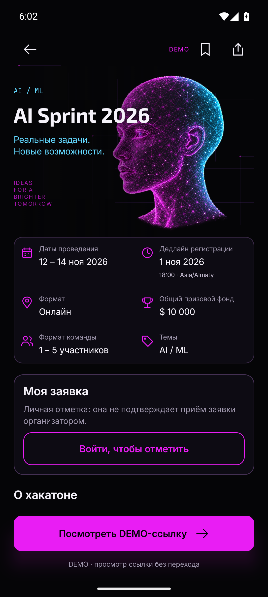
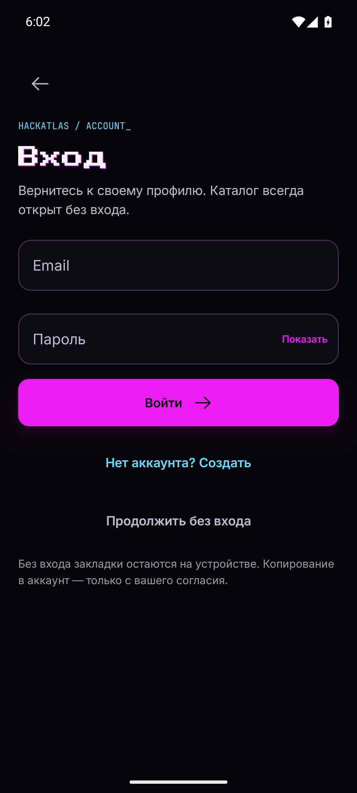
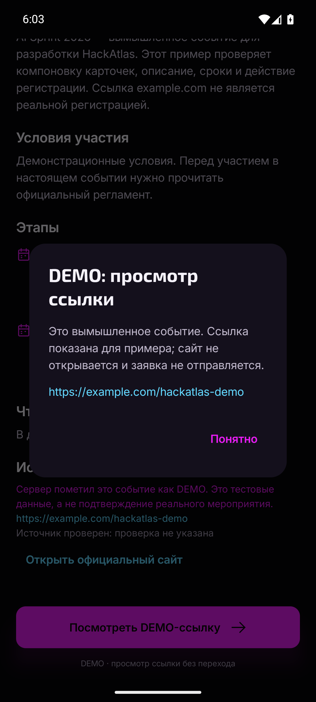
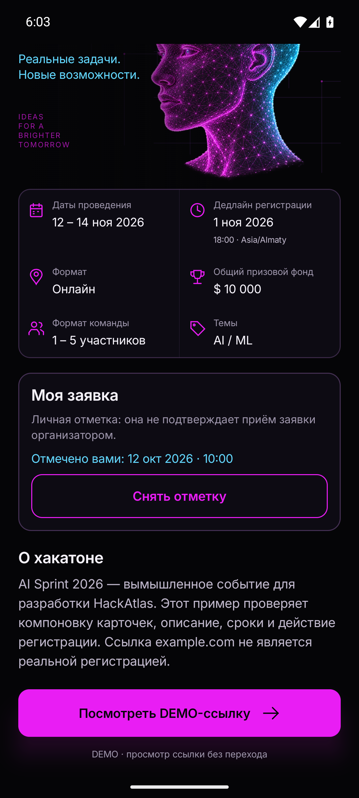
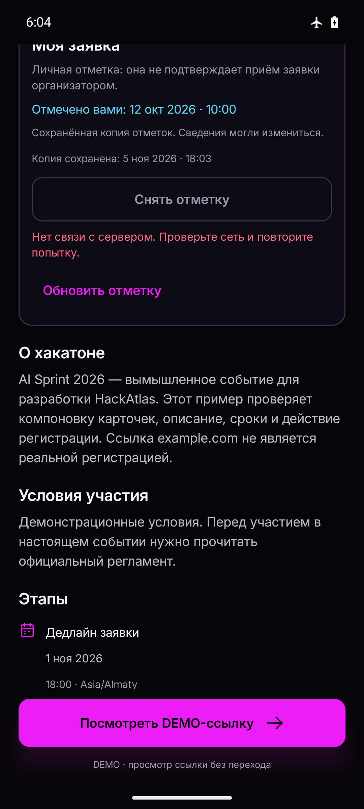
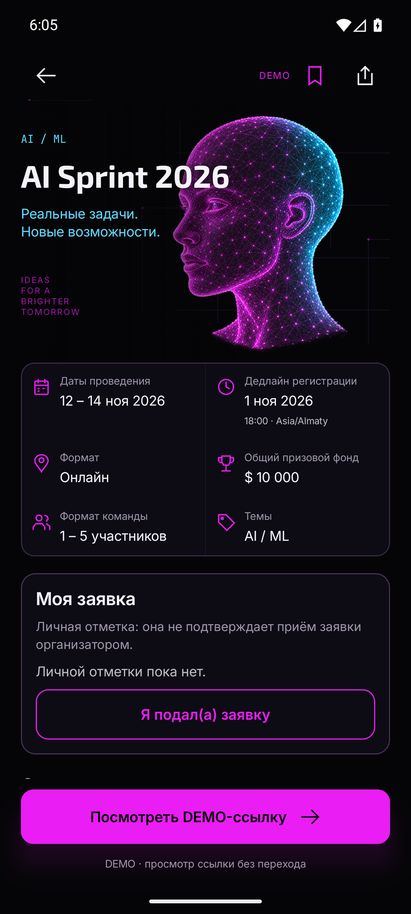
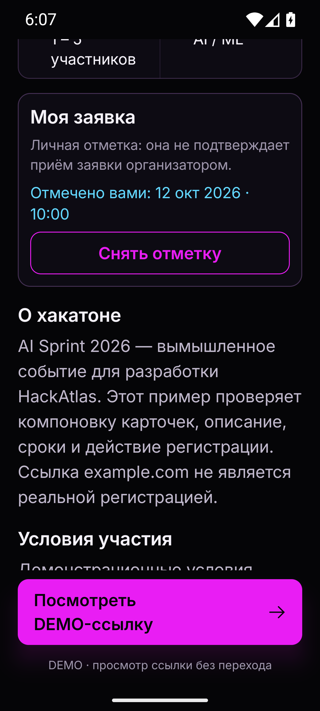
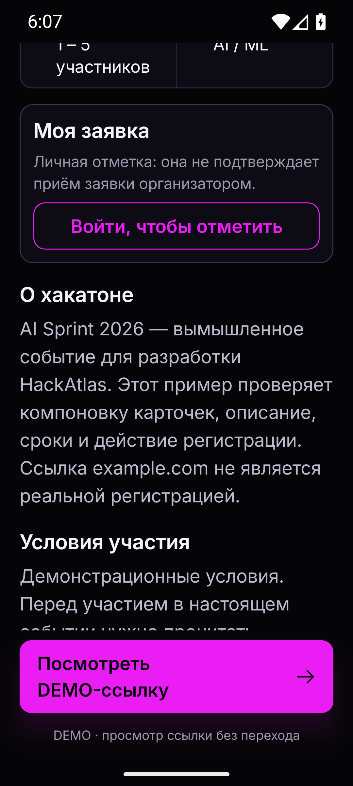

Android-приёмка · 5 ноября 2026. Тот же APK, который прошёл сборку и тесты. Настоящий локальный B2 и одноразовая PostgreSQL; синтетические аккаунты и DEMO-события.
Изменения подтверждает сервер; без сети доступна только своя копия. Отметка личная и не подтверждает приём заявки организатором. Без очереди, отдельного списка и напоминаний. Дизайн и шрифты M1 сохранены.
Android16/API36,2GB/4cores, аппаратная графика NVIDIA, Vulkan отключён. На 360dp/font130 текст переносится, действия доступны прокруткой. В dev-стенде дата отметки идёт от фиксированного серверного времени; дата копии — от устройства.








Ограничения: iOS native, физическое устройство и TalkBack не проверены. Четыре прежних неудачных прогона сохранены в истории; полный успешный прогон без повторов UI/HTTP-действий.
Debug APK8774 требует своего backend. Временные процессы остановлены; локальные ignored AVD/env оставлены, поскольку автоматическая проверка отклонила их удаление.